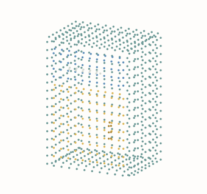
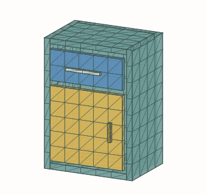
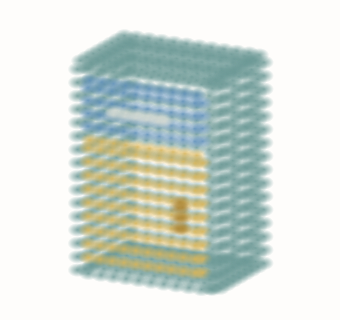
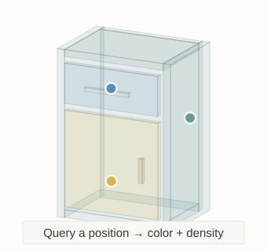

2.1 How do we represent a 3D cabinet?
General introduction
A photograph stores an image from one viewpoint. A 3D representation stores information about the cabinet in space, so software can inspect it or calculate views from other positions.
Sections 2.1–2.3 introduce general concepts. Sections 2.4–2.7 show how specific tools and methods use them.
2.1.1 What is stored?
A representation is a way of describing an object with data. For the same cabinet, we might save individual 3D points, connected surface patches, soft colored blobs, or a function that answers questions about locations in space.
All four can describe the cabinet in 3D, but they store different information. Start with what each contains; the next sections explain how software uses it to draw a picture.
The drawings below show these different data layouts using one teaching cabinet: a teal body, a blue drawer, and a gold door.

Point cloud
Store: a list of 3D positions, sometimes with colors.
Points can outline the drawer and handle. The list does not specify which points form a continuous surface.

Mesh
Store: 3D corner positions, called vertices, and surface patches, called faces, connecting them.
The faces describe the cabinet’s surfaces. A face can have three sides (a triangle) or four (a quad).

3D Gaussians
Store: each blob’s position, size, orientation, opacity, and appearance.
Each blob is a soft shape in 3D. Its opacity controls how strongly its color contributes and hides what is behind it. Many blue blobs can form the drawer’s image.

Radiance field
Describe: the color seen from a direction and the density at locations in 3D. Density controls how strongly a small region blocks the view.
Near the drawer front, the answers may be blue and strongly blocking; in the air, almost no blocking. NeRF uses a neural network to supply these answers. The dots mark example queries, not a stored point cloud.
A Gaussian is a soft 3D shape, not just a colored point. A radiance field describes visibility and appearance; its density does not specify the cabinet’s physical mass. We will see how these representations produce pictures in Section 2.3.
Further reading: point clouds, mesh structure, 3D Gaussians, and NeRF’s radiance field.
2.1.2 Representation, method, and renderer
Making a 3D cabinet involves three different roles: a method creates the data, a representation specifies what is kept, and a renderer turns it into a picture.
- Representation
- What information do we keep? For example, the cabinet’s vertices and faces, or a set of 3D Gaussians.
- Reconstruction or generation method
- How do we obtain that information? Reconstruction tries to recover the cabinet seen in photographs. A generator can propose a cabinet using patterns learned from many examples, including guesses about unseen parts.
- Renderer
- How do we make a picture from it? Software uses the representation and a camera to calculate a 2D image.
A method’s supported outputs depend on its design. Some methods produce surface geometry; some produce Gaussians; others support several representations. We first learn what those outputs contain, then follow how methods create them.
For example: a method creates the cabinet as a mesh → we save its surface data → a mesh renderer draws a front view. The saved 3D data can also be used to draw a side view.